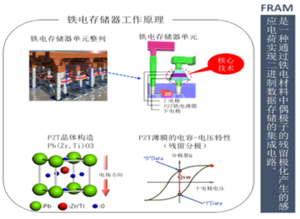
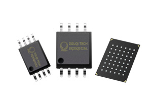
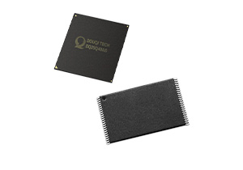
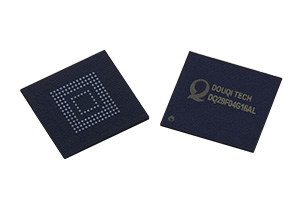
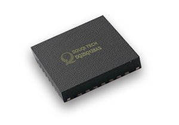

-

铁电存储芯片原理
-

Nor Flash
-

NAND Flash
-
豆萁科技SPI NOR FLASH系列产品遵循国际JEDEC
标准中关于接口及控制模式的规定，按照JEDEC相
关标准进行严格测试。公司采用先进设计技术，优
化存储单元的读写操作，实现低功耗和高性能：运
行速度快，支持多种擦写模式，擦写次数高达10万
次，数据可保存20年以上。通过与上下游密切合
作，提供SOP，VSOP，TSSOP，DIP, WSON,
BGA，USON等多种封装形式以满足在消费类、工
业级和医疗电子等多种应用领域需求。 -
豆萁科技512Mb-8Gb 小容量Parallel NAND
FLASH 应用于多媒体和网络互连领域，包括智能
机、机顶盒、智能电视、安防以及智能穿戴设备。
产品在指令集、接口和封装形式等都与国际通用标
准一致。公司NAND FLASH 采用SLC 结构，具
有更快速的编程和读写能力，更好的可靠性，是你高
运行速度，高稳定性存储方案的首选。
-

控制芯片
-

抗辐照芯片
-
eMMC作为移动设备存储的极佳选择，应用范围涵
括智能手机，平板电脑，智能电视，游戏机，机顶
盒及其他消费类电子产品。豆萁科技的eMMC主控
芯片支持主要NAND FLASH大厂的SLC、MLC及
TLC等格式，运用先进的制程及搭配优化的硬件/软
件架构，为异动装置及嵌入式应用提供低功耗，高
性能的解决方案。 -
豆萁科技同时与中科院微电子研究所结成全面战略
合作伙伴关系，联合研发抗辐照系列产品，通过工
艺，设计加固，为医疗电子产品，工业领域，航空
航天等高可靠应用领域提供具有自主知识产权的高
性能存储芯片。